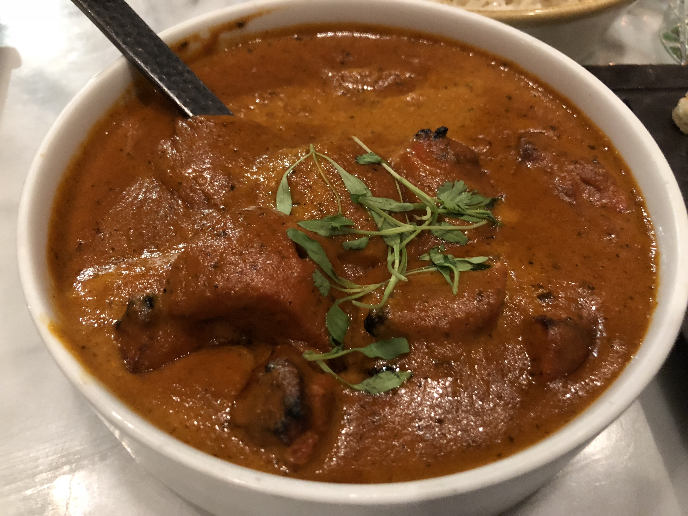

Butter Chicken

This is a simple home version of butter chicken, also known as murgh or chicken makhani, a popular dish in Indian restaurants. It is best served with naan, an Indian bread, or basmati rice.
Ingredients
- 1/3 cup plain non-fat yogurt
- 1 tablespoon tandoori masala powder
- 11/2 pounds boneless, skinless chicken thighs, cut into 1-inch pieces
- 1/2 onion, chopped
- 1 (1 inch) piece fresh ginger
- 1 clove garlic
- 2 tablespoons of water
- 3 tablespoons cooking oil, divided
- 2 teaspoons garam masala
- 1/4 teaspoon chili powder
- 1 cup tomato sauce
- 2 tablespoons butter
- 1 teaspoon dried fenugreek leaves
- 1 teaspoon salt